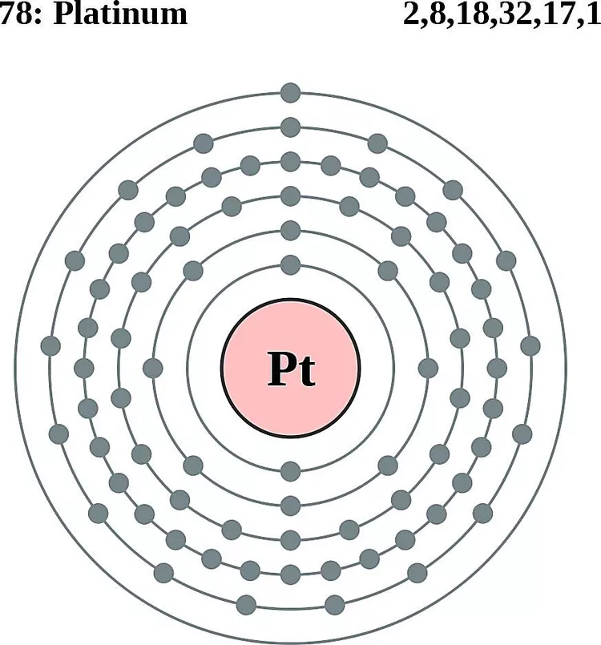

Atomic Number 78 | Precious and Highly Corrosion-Resistant Metal

Overview
Platinum is a chemical element with the symbol Pt and atomic number 78.
It is a dense, malleable, and ductile metal with exceptional resistance to corrosion.
Platinum is one of the most precious metals and is widely used in jewelry, catalytic converters, and industrial applications.
Discovered in South America in the 16th century, platinum derives its name from the Spanish term "platina," meaning "little silver."
Its rarity and unique properties make it invaluable in various fields.
Properties & Uses
Atomic Number: 78
Atomic Mass: 195.08 u
Electron Configuration: [Xe] 4f14 5d9 6s1
Group / Block: 10 (d-block)
Standard State: Solid at 25 °C
Melting Point: 1768.3 °C
Boiling Point: 3825 °C
Radioactive: No
Platinum is widely used in catalytic converters to reduce harmful emissions from vehicles.
It is also a key material in the production of jewelry, laboratory equipment, and medical devices, such as pacemakers.
In addition, platinum compounds are used in cancer treatment, particularly in chemotherapy drugs like cisplatin.
Platinum in Action
Platinum's unique properties make it indispensable in various applications, from jewelry to advanced technologies.
Its resistance to corrosion and high melting point have made it a sought-after material in numerous industries.
Historical Perspective
Platinum was introduced to Europe in the 16th century, initially dismissed as an impurity in gold.
Its unique properties were later recognized, and it became a symbol of prestige and wealth.
During the 20th century, platinum's industrial significance expanded with advancements in automotive and medical technologies.
Today, platinum remains indispensable in numerous industries, from renewable energy systems to cutting-edge medicine.